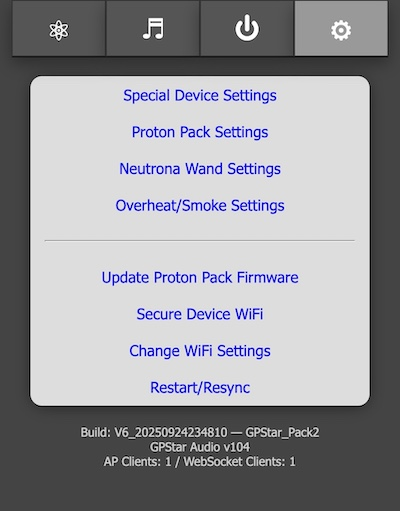
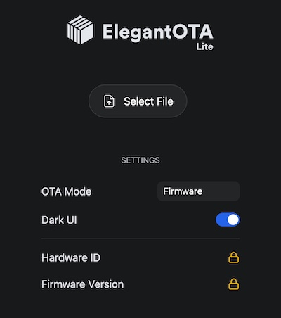
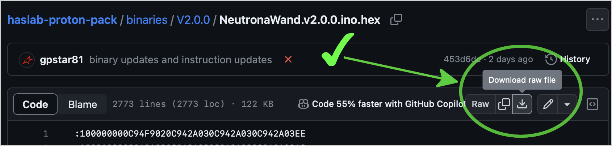
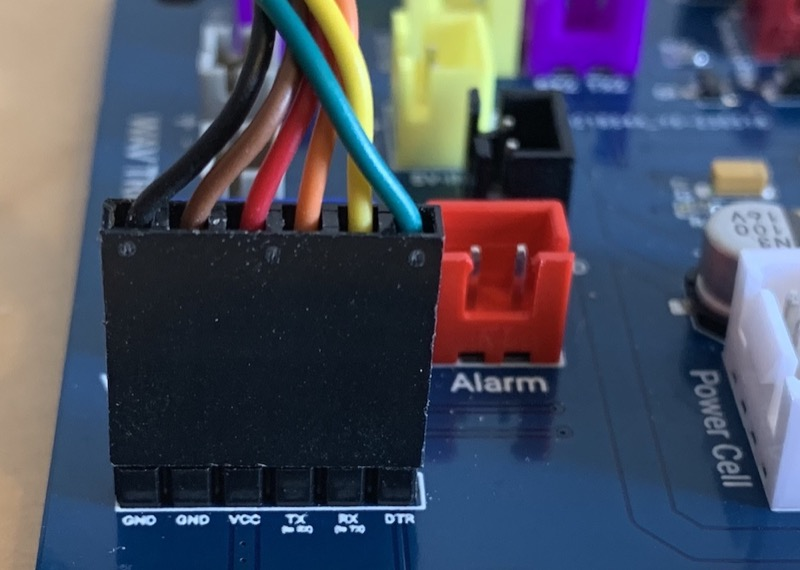
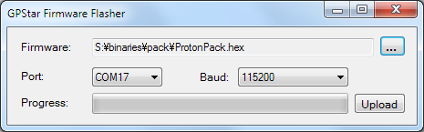
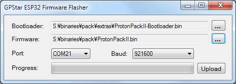

Software Flashing Guide
Each supported device in the GPStar system (Proton Pack, Neutrona Wand, Attenuator, Single-Shot Blaster, Belt Gizmo, Stream Effects, Proton Stream Target Trainer) are separate devices and must be updated individually when software updates are available. The following guide focuses on the core system: the Proton Pack and Neutrona Wand. For updating the Attenuator (aka. Wireless Adapter), Proton Stream Target Trainer, Belt Gizmo, or Stream Effects please see their respective guides. For the Single-Shot Blaster, follow the same instructions as below for the Neutrona Wand but use the Single Shot firmware file instead.
Note that the GPStar Audio may occasionally also require updates to firmware, though this will be rare. See the SOUND guide for more information. As of version 6.1.0 of the software all devices with a web UI will accurately report the firmware version of the GPStar Audio device it controls. For the Attenuator and Proton Pack both will reflect the Proton Pack's audio device. Compare the reported version number to the latest firmware version to know if an update is necessary.
Please mind the following regardless of model or version of hardware in use:
- The same software version should be uploaded for ALL interconnected devices (read: Pack, Wand, and optional Attenuator), even if the release changelog does not advertise modifications for a specific device. This ensures proper serial communication between these components.
- When you are flashing updates to your devices, make sure that BOTH your Proton Pack and Neutrona Wand Micro SD Cards have all the latest sound effects from this repository as found on our Support & Downloads page.
- Accessories such as the Stream Effects and Belt Gizmo should also be updated to remain in sync with any changes to WebSocket functionality which may have been implemented for the Attenuator/Pack and Wand.
Supported Devices
Please refer to the table below for a list of devices and their supported software release.
| Controller Device | v1.x | v2.x | v3.x | v4.x | v5.x | v6.0 | v6.1 | v6.2 |
|---|---|---|---|---|---|---|---|---|
| GPStar Proton Pack | Yes | Yes | Yes | Yes | Yes | Yes | Yes | Yes |
| GPStar Neutrona Wand | Yes | Yes | Yes | Yes | Yes | Yes | Yes | Yes |
| GPStar Single-shot Blaster | — | — | — | — | Yes | Yes | Yes | Yes |
| GPStar Proton Pack II | — | — | — | — | — | — | Yes | Yes |
| GPStar Neutrona Wand II | — | — | — | — | — | — | Yes | Yes |
| GPStar Single-shot Blaster II | — | — | — | — | — | — | Yes | Yes |
| d1 DIY Arduino Mega Proton Pack | Yes | Yes 3 | Yes 3 | Yes 3 | Yes 3 | Yes 3 | Yes 3 | Yes 3 |
| d1 DIY Arduino Mega Neutrona Wand | Yes | Yes 2 | Yes 2 | Yes 2 | Yes 2 | Yes 2 | Yes 2 | Yes 3 |
| s1 Attenuator (Arduino Nano) | Yes | Yes | Yes | Yes | Yes | No 4 | No 4 | No 4 |
| s1 Attenuator (ESP32) | — | — | Yes | Yes | Yes | Yes | Yes | Yes |
| s1 Wireless Adapter (ESP32) | — | — | Yes | Yes | Yes | Yes | Yes5 | Yes5 |
| Belt Gizmo | — | — | — | — | — | Yes | Yes | Yes |
| Stream Effects | — | — | — | — | — | Yes | Yes | Yes |
| GPStar PSTT | — | — | — | — | — | — | Yes6 | Yes |
d1 These are now considered as "legacy" devices and have distinct end-of-life notes in later versions (see additional superscript notations).
s1 These are referred to as "Serial1" devices as they attach to the GPStar Proton Pack PCB though they are considered separate devices and will be flashed independently. Please see the ATTENUATOR_FLASHING guide for those instructions.
2 Support for the Arduino Nano as a wand controller ended after the release of v2.2.0. That device must be replaced with a Mega 2560 Pro Mini to support the later software releases.
3 If paired with an Arduino Nano for the Neutrona Wand, this arrangement is deprecated. To continue using the DIY Arduino Mega you must upgrade the Neutrona Wand to use a Mega 2560 Pro Mini.
4 Support for the Arduino Nano as an Attenuator controller ended as of the v6.0.0 release. That device must be replaced with an ESP-WROOM-32 module to support the later software releases.
5 Use of an ESP32 as Wireless Adapter is still supported for GPStar I users, but is no longer necessary for GPStar II kits as they provide built-in WiFi capability.
6 Introduced during the v6.1.1 beta; requires the 6.1.1 beta software to be installed on a GPStar II Neutrona Wand or GPStar II Single-Shot Blaster in addition to the PSTT.
📝 GPStar II Flashing
The GPStar Proton Pack II and GPStar Neutrona Wand II can be updated wirelessly using a WiFi connection and web browser to reach the firmware update screen. Before you begin, you must enable WiFi on all devices as the WiFi on the GPStar Neutrona Wand II is disabled for power saving measures when it is connected to a GPStar Proton Pack II. Similarly, if you have a Attenuator connected, the GPStar Proton Pack II will turn off its WiFi for power saving.
You can manually turn on or turn off the WiFi for each device via one of the following ways:
- From the Neutrona Wand Operation Menu via Menu Level 3 which is only available when using a GPStar II Neutrona Wand.
- From the highest level device (either Attenuator if equipped, or GPStar II Proton Pack) via the Settings page(s) accessed through the web UI. Example: From the Attenuator you can turn on WiFi for the pack or wand by using the toggle at the bottom of the Pack Settings or Wand Settings pages and only saving the change (no need to save to EEPROM).
For best results it is advised that you update the directly-connected devices in the following order:
- GPStar II Neutrona Wand
- GPStar II Proton Pack
- Attenuator (if applicable)
For a complete view of the process please see the following flowchart:
Updating Over-the-Air
Once the WiFi has been enabled for all devices you will connect individually to update the firmware on each device:
- Connect to the respective device's private WiFi network.
- Open your web browser to the device and navigate to the settings tab in the web UI.
- Click on the respective "Update {device} Firmware" link.

- Use the select file button and select the .bin firmware for the device that can be found in the
/binariesdirectory.

- The upload will begin immediately. Once at 100% the device will reboot.
Connecting to GPStar II Controllers via USB
Under normal circumstances you should only ever have to update the GPStar II boards over-the-air via the web UI as above. As a backup, the GPStar II Proton Pack and Neutrona Wand have a built-in USB-C connector that can be used to connect a computer to the board for manually flashing firmware. Connect a USB-C cable to the device from your computer, then use the GPStar ESP32 Firmware Flasher to update the firmware. See GPStar II & ESP32 USB Flashing below.
📝 GPStar I Flashing
These devices do not offer over-the-air updates and MUST be updated by using a USB serial cable and the GPStar firmware flasher utility.
Flashing Updates
After connecting your GPStar Proton Pack or Neutrona Wand board to your computer with the included FTDI to USB programming cable, download the GPStar firmware flasher from the GPStar Support & Downloads page and run the program.
As of the v6.1.1 release, new versions of the flasher utilities are available and are encouraged to be used instead of any older copies. These provide more integity/size checks for selected files, ensuring you have selected a true binary file.
GPStar I Pack/Wand Firmware Flasher
You can find the latest stable versions of the Firmware and Flashing software at:
https://gpstartechnologies.com/pages/support-downloads
The latest pre-compiled firmware binaries can be found in the binaries folder of this repository.
When downloading the binaries via GitHub, click on the file to open its webpage then click on the Download raw file button in the upper-right of the page.

IMPORTANT: It is REQUIRED to have both the Proton Pack and Neutrona Wand on the same version of their respective firmware. It is also recommended that this be the latest available firmware.
Connecting to GPStar I Proton Pack and Neutrona Wand PCBs
Use the included FTDI to USB programming cable that comes with the GPStar kits or use any other suitable FTDI 5V basic serial connector. The UART Pins on the PCB should align with with the standard wire order for FTDI-to-USB cables which use a single Dupont 6-pin connector. Observe these common colours and notes to ensure proper orientation:
- The ground pin will typically be a black wire, while VCC will typically be red.
- The DTR pin on the PCB will connect to a wire labelled either DTR or RTS.
- Any wire labelled CTS will be connected to the 2nd pin labelled GND on the PCB.
- Be careful to not reverse the connector!

📝 Note: For the Neutrona Wand, some users have adopted use of the Hasbro Plasma Series Spengler's Neutrona Wand: Data Port Front Tube as offered by RADIsLAB, which includes a parts list for a dedicated programming cable which stay mounted inside of the device.
Using the Flashing Software
Windows

- Open the firmware flasher, then select the firmware from the firmware selection box for the GPStar board you wish to flash.
- Then select the Port for the connection to your GPStar Board.
Microsoft Windows users: The Default baud rate of 115200 should already be automatically selected.The Port will be different for every user and may not look like what you see in the screenshot image. If you attempt to flash and your GPStar board can not be found, please select another PORT from the drop down menu and try again. - Click on the Upload button and wait for it to complete.
Note: If connecting the programming cable for the first time to your computer, it may take Windows a few minutes to setup the USB/TTL drivers automatically before it starts working.
macOS
- Open the firmware flasher by double-clicking the .DMG file. This will mount a new drive for the application.
- Go to the mounted drive "GPSTAR-FIRMWARE-FLASHER" and double-click on the
GPStar-Firmware-Flasher.appto start the program. - Select the firmware from the firmware selection box for the GPStar board you wish to flash.
- Then select the PORT for the connection to your gpstar Board after connecting the gpstar board to your computer with the programming cable.
The PORT will be different for every user and may not look like what you see in the screenshot image. - Click on the UPLOAD button and wait for it to complete.
Flashing Update Instruction Video
GPStar I Firmware Update Instruction Video (YouTube)

GPStar II USB Flashing
GPStar ESP32 Firmware Flasher
You can always find the latest stable versions of the Firmware and Flashing software at:
https://gpstartechnologies.com/pages/support-downloads
The latest pre-compiled firmware binaries can also be found in the binaries folder of the Github project repository: Binaries Folder
When downloading the binaries via GitHub, click on the file to open its webpage then click on the Download raw file button in the upper-right of the page. Alternatively, download the entire release as a .zip file which will guarantee the firmware files are available in the correct format, as well as all audio files.
If your firmware obtained via GitHub fails to be flashed, check the contents of all downloaded file(s)! If any file contains HTML then you downloaded the wrong form of the file--return to the Github location and make sure you use the
Download raw filebutton.
IMPORTANT: It is REQUIRED to have both the Proton Pack and Neutrona Wand on the same version of their respective firmware. It is also recommended that this be the latest available firmware.
Using the Flashing Software

- Open the firmware flasher, then select the bootloader and firmware in the appropriate selection boxes for the GPStar board you wish to flash.
- Then select the Port for the connection to your GPStar Board.
Microsoft Windows users: The Default baud rate of 921600 or 115200 should already be automatically selected.The Port will be different for every user and may not look like what you see in the screenshot image. If you attempt to flash and your GPStar board can not be found, please select another Port from the drop down menu and try again. - Click on the Upload button and wait for it to complete.
Note: If connecting the programming cable for the first time to your computer, it may take Windows a few minutes to setup the USB/JTAG drivers automatically before it starts working.
[Advanced] Compile & Upload
If you prefer to make adjustments to the source code configuration options instead of flashing pre-compiled binaries, refer to the Compiling and Flashing guide.